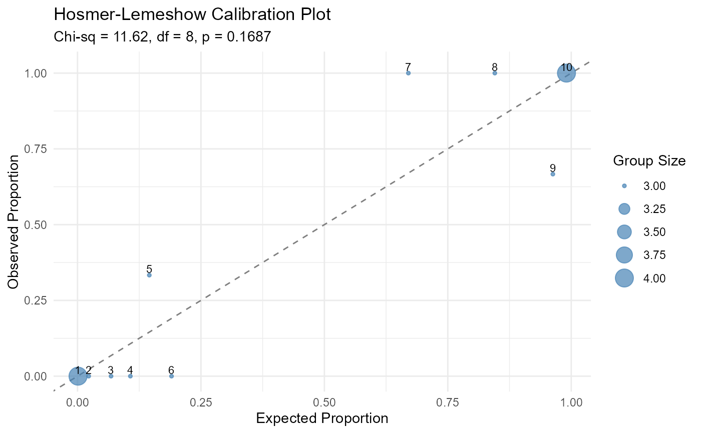

Plot Hosmer-Lemeshow Goodness-of-Fit
plot_hoslem.RdVisualizes the results of the Hosmer-Lemeshow test by plotting observed versus expected event proportions across decile groups. Points falling near the 45-degree line indicate good calibration.
References
Hosmer, D.W., Lemeshow, S., and Sturdivant, R.X. (2013). Applied Logistic Regression, 3rd Edition. John Wiley & Sons.
Examples
m <- glm(am ~ mpg + wt, data = mtcars, family = binomial)
plot_hoslem(m)
